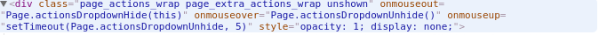

Index
- JS Шаблоны (Объекты)
- JS Шаблоны (Шаблоны создания объектов)
- JS Шаблоны (Обертки)
- JS Шаблоны (Массивы)
- JS Шаблоны (Функции / Определения)
- JS Шаблоны (Функции / Работа)
- Функции обратного вызова
- Возврат функции
- Самоопределяемые функции
- Немедленно вызываемые функции
- Значения, возвращаемые немедленно вызываемыми функциями
- JS Шаблоны (Функции / Примеры)
- JS Шаблоны (JSON)
- Работа с DOM деревом
- Шаблонизация
- Конструкторы и прототипы
- AJAX
- !Мысли
- style js
- console.time
- documentFragment
- WebWorker
- Вопросы
- Первый xhr
!Мысли
1. Назначение событий в разметке:<input type="button" id="button" onclick="sayThanks()" />
Минус: Нельзя назначить несколько обработчиков
PS: МОЖНО! Например, вот так:

Решение: Использовать методы addEventListener и removeEventListener
2. Порядок событий - http://learn.javascript.ru/events-and-timing-depth (смотри комментарии!!)
3. Разница между event.target и this
event.target - cамый глубокий элемент, который вызывает событие;
• event.target – это исходный элемент, на котором произошло событие, в процессе всплытия он неизменен.
• this – это текущий элемент, до которого дошло всплытие, на нём сейчас выполняется обработчик.
4. Свойство с именем prototype можно указать на любом объекте, но особый смысл оно имеет, лишь если назначено функции-конструктору.
Само по себе, без вызова оператора new, оно вообще ничего не делает, его единственное назначение – указывать __proto__ для новых объектов.
5. Запрет набора символов в input
→ через атрибут maxlength
→ через условие и подстроку
if (this.value.length > 1000)
this.value = this.value.substr(0, 1000);
this.value = this.value.substr(0, 1000);
6. Обратить внимание на события мышки.
Особенно разницу между событиями событий
движение mouseover/out, mouseenter/leaveСсылка: События мыши
7. $(function() {}); — это равносильно $(document).ready(...)
8. Number.toLocaleString('ru', { maximumSignificantDigits: 3 }); - преобразуем число в формат "XXX XXX"
9. После условий, объявлений функций и циклов не надо ставить ";"
10. В идеале надо такой код стараться писать, чтобы из названия переменных и функций было понятно все, а комментарии
нужны, когда не получается нормальный код написать и требуется пояснение;
11. Обращение к DOM - ресурсоемкий процесс. Следить за производительностью!
12. Написание программы можно разделить на 3 фазы:
1 - быстрое написание кода, который просто работает.
2 - тестировани и исправление ошибок.
3 - изменение исходного кода в целях того, чтобы сделать его более понятным(рефакторинг),
быстрым(оптимизация) и еще по многим возможным соображениям и возвращение на фазу 2
13. Название функций
Во первых: Название функции должно передавть смысл работы этой функции.
Во вторых: Каждая функция должна отвечать за одной действие!
По наименованию:
Префикс handle - когда это обработчик, то есть если метод является обработчиком события или запроса.
(в общем если метод обрабатывает событие то есть получает его на вход лучше ставить префикс handle)
Если метод начинается на get, то обычно подразумевается что он только возвращает
что-то при этом не меняя никакие внешние переменные те состояние программы.
Если используется префикс set, то подразумевается, что он устанавливает переданные ему значения
в состояние объекта при этом ничего не возвращая разве что this может вернуть чтобы можно было
obj.setPrice(200).setDescription(“bla”);
(но в том случае который я тебе откоментил методу на вход приходит не значение
а событие из которого метод внутри извлекает значение и устанавливает его
поэтому префикс handle - обработать событие (edited)
а не просто установить значение)